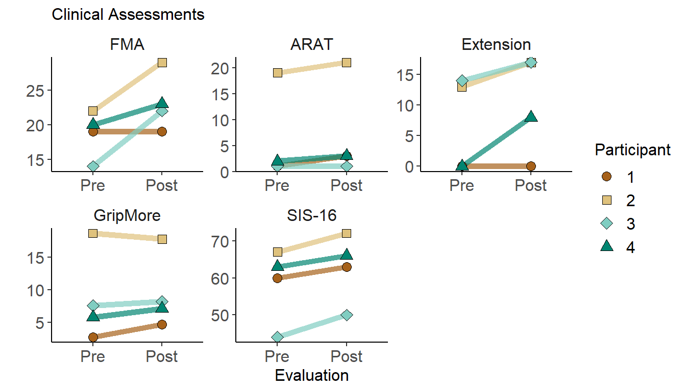
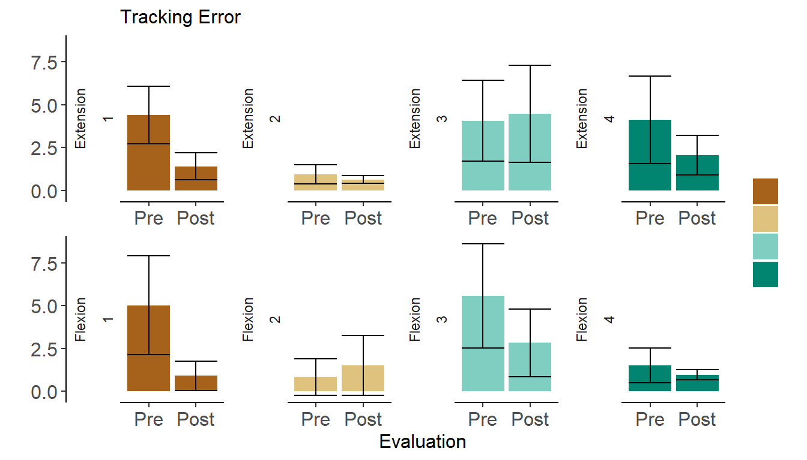
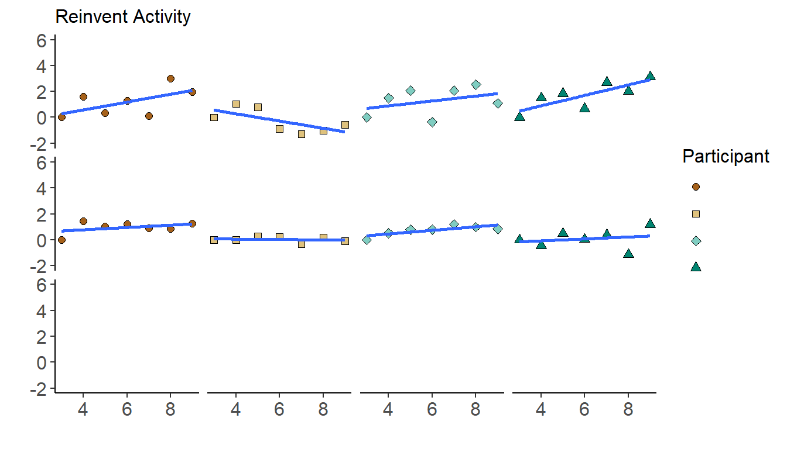
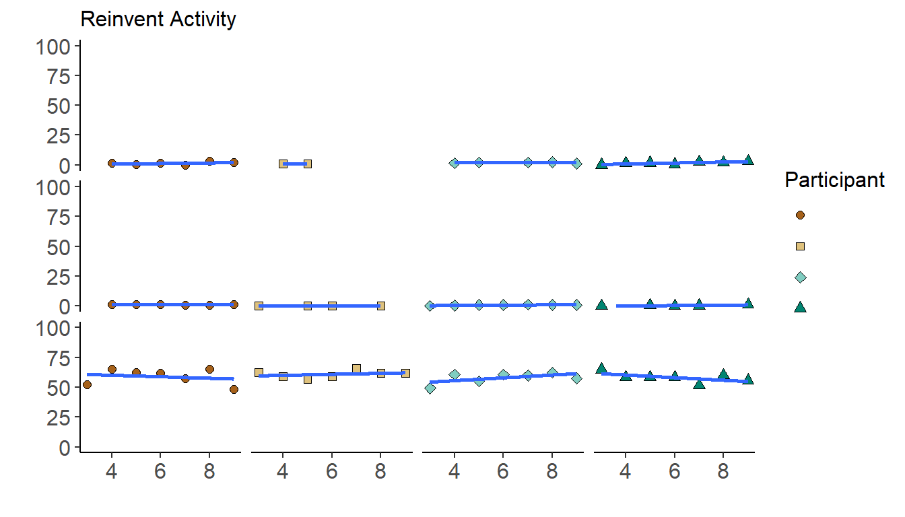

# Colors
seqColor <- c("#a6611a","#dfc27d","#80cdc1","#018571")
# Figure Theme
figTheme <- theme(
legend.text = element_text(size = 12),
legend.title = element_text(size = 12),
plot.title = element_text(size = 12),
strip.text.x = element_text(size = 12),
axis.title.x = element_text(size = 12),
axis.title.y = element_text(size = 12),
axis.text.x = element_text(size = 12),
axis.text.y = element_text(size = 12))
# Load data frame
load("sensors2020data.Rda")Participant demographics and baseline evaluations
# Show table
demograph.data%>%
dplyr::rename(
"Participant" = Subject,
"Sex" = Gender,
"Onset (months)" = Months.since.stroke,
"FMA-UE" = FMA,
"Paresis" = Affected.side) %>%
pander()| Participant | Sex | Age | Onset (months) | Paresis | FMA-UE | MOCA |
|---|---|---|---|---|---|---|
| 1 | Male | 66 | 34 | Left | 19 | 23 |
| 2 | Male | 42 | 34 | Right | 22 | 17 |
| 3 | Male | 64 | 56 | Left | 14 | 22 |
| 4 | Female | 53 | 28 | Left | 20 | 22 |
The simulator sickness questionnaire evaluates different components and has a total score of 63 points. Group changes on simulator sickness were evaluated with the total sickness as a percentage (sickness = total*100/63).
# Get pre and post
pre <- simsick.data %>%
filter(session == 2)
post <- simsick.data %>%
filter(session == 9)
t.test(post$Sickness, pre$Sickness, paired = TRUE)##
## Paired t-test
##
## data: post$Sickness and pre$Sickness
## t = 0.32163, df = 3, p-value = 0.7688
## alternative hypothesis: true difference in means is not equal to 0
## 95 percent confidence interval:
## -7.059228 8.646530
## sample estimates:
## mean of the differences
## 0.7936508Clinical Assessments
# Change session to Pre-Post and melt dataframe
behav.melt <-
behav.data %>%
filter(session %in% c(1,10)) %>%
mutate(session = ifelse(session == 1, "Pre","Post")) %>%
dplyr::rename(
"Extension" = WE,
"SIS-16" = SIS16) %>%
melt(id = c("subject","session"))
# Plot FMA and ARAT
behav.melt %>%
ggplot() +
geom_line(aes(session, value, group = as.factor(subject), color = as.factor(subject)), size = 2, alpha = 0.7, show.legend = F) +
geom_point(aes(session, value, shape = as.factor(subject), fill = as.factor(subject)), size = 3) +
facet_wrap(~ variable, scales = "free", ncol = 3) +
xlab("Evaluation") +
ylab("") +
theme_classic() +
scale_x_discrete(limits = c("Pre","Post")) +
scale_color_manual(values = seqColor[1:5]) +
scale_fill_manual(values = seqColor[1:5]) +
scale_shape_manual(values = 21:24) +
figTheme +
theme( strip.background.x = element_blank())+
labs(
title = "Clinical Assessments",
fill = "Participant",
shape = "Participant",
color = ""
)
Statistical comparisons for clinical assessments
# Sumary of t test per assessment
aux = TRUE
for (scale in c("FMA","ARAT","WE","GripMore","SIS16")) {
pre <-
behav.data %>%
filter(session == 1) %>%
pull(scale)
post <-
behav.data %>%
filter(session == 10) %>%
pull(scale)
tt <- t.test(post, pre, paired = TRUE)
if(aux){
t <- data.frame(Assessment = scale, t = tt$statistic, p = tt$p.value,
Pre = paste(mean(pre, na.rm = T)," (",formatC(sd(pre, na.rm = T),digits = 5),")",sep = ""),
Post = paste(mean(post, na.rm = T)," (",formatC(sd(post, na.rm = T),digits = 5),")",sep = ""))
aux = FALSE
}
else{
t <- bind_rows(t,data.frame(Assessment = scale, t = tt$statistic, p = tt$p.value,
Pre = paste(mean(pre, na.rm = T)," (",formatC(sd(pre, na.rm = T),digits = 5),")",sep = ""),
Post = paste(mean(post, na.rm = T)," (",formatC(sd(post, na.rm = T),digits = 5),")",sep = "")))
}
}
scaleName = c("FMA","ARAT","Extension","Grip More-Imp.","SIS-16")
t$Assessment <- scaleName
# As table
t %>%
arrange(Assessment) %>%
pander()| Assessment | t | p | Pre | Post |
|---|---|---|---|---|
| ARAT | 2.611 | 0.0796 | 5.75 (8.8459) | 7 (9.3808) |
| Extension | 2.27 | 0.1079 | 6.75 (7.8049) | 10.5 (8.1854) |
| FMA | 2.435 | 0.09295 | 18.75 (3.4034) | 23.25 (4.1932) |
| Grip More-Imp. | 1.253 | 0.299 | 8.6675 (6.9861) | 9.4425 (5.7796) |
| SIS-16 | 5.667 | 0.01088 | 58.5 (10.083) | 62.75 (9.2871) |
# Individual stats
track.data %>%
filter(session == "Post",metric == "Error") %>%
select(-c(session,metric,value)) %>%
pander()| participant | task | p |
|---|---|---|
| 1 | Extension | 0 |
| 2 | Extension | 0.05 |
| 3 | Extension | 0.658 |
| 4 | Extension | 0.0072 |
| 1 | Flexion | 0 |
| 2 | Flexion | 0.1883 |
| 3 | Flexion | 0.0058 |
| 4 | Flexion | 0.0491 |
# Group t-test
aux = TRUE
for (tk in c("Extension","Flexion")) {
pre <- track.data %>%
filter(session == "Pre",metric == "Error", task == tk) %>%
pull(value)
post <- track.data %>%
filter(session == "Post",metric == "Error", task == tk) %>%
pull(value)
tt <- t.test(post, pre, paired = TRUE)
if(aux){
t <- data.frame(task = paste(tk,"Error",sep = " "), t = tt$statistic, p = tt$p.value,
Pre = paste(mean(pre, na.rm = T)," (",formatC(sd(pre, na.rm = T),digits = 5),")",sep = ""),
Post = paste(mean(post, na.rm = T)," (",formatC(sd(post, na.rm = T),digits = 5),")",sep = ""))
aux = FALSE
}
else{
t <- bind_rows(t,data.frame(task = paste(tk,"Error",sep = " "), t = tt$statistic, p = tt$p.value,
Pre = paste(mean(pre, na.rm = T)," (",formatC(sd(pre, na.rm = T),digits = 5),")",sep = ""),
Post = paste(mean(post, na.rm = T)," (",formatC(sd(post, na.rm = T),digits = 5),")",sep = "")))
}
}
t %>%
dplyr::rename("Task" = task) %>%
pander()| Task | t | p | Pre | Post |
|---|---|---|---|---|
| Extension Error | -1.584 | 0.2113 | 3.3707 (1.6319) | 2.130475 (1.6587) |
| Flexion Error | -1.559 | 0.2169 | 3.234675 (2.3997) | 1.5575 (0.89222) |
Performance changes in EMG amplitude control.
# Mean Amplitude Error
track.error <-
track.data %>%
filter(metric == "Error") %>%
select(-c(metric,p)) %>%
dplyr::rename("error" = value, "subject" = participant)
# Standard Deviation
track.dev <-
track.data %>%
filter(metric == "Deviation")
track.error$lowSD <- track.error$error-track.dev$value
track.error$upSD <- track.error$error+track.dev$value
track.error %>%
ggplot() +
geom_bar(aes(session,error, fill = as.factor(subject) ), stat = "identity", position = "dodge") +
geom_errorbar(aes(session,error,ymin = lowSD, ymax = upSD)) +
facet_wrap(task ~ subject, scales = "free_x", ncol = 4, strip.position = "left") +
xlab("Evaluation") +
ylab("") +
theme_classic() +
scale_x_discrete(limits = c("Pre","Post")) +
scale_color_manual(values = seqColor[1:4]) +
scale_fill_manual(values = seqColor[1:4]) +
scale_shape_manual(values = 21:24) +
figTheme +
theme( strip.background.y = element_blank(),
legend.text = element_blank())+
labs(
title = "Tracking Error",
fill = "",
shape = "",
color = ""
)
Group level analysis of within-game performance andd grip strenght across trqaining sessions.
aux = TRUE
for (scale in c("extensors","flexors","individuation","threshold","success","grip")) {
pre <-
training.data %>%
filter(session == 3) %>%
pull(scale)
post <-
training.data %>%
filter(session == 9) %>%
pull(scale)
tt <- t.test(post, pre, paired = TRUE)
if(aux){
t <- data.frame(Activity = scale, t = tt$statistic, p = tt$p.value,
Pre = paste(formatC(mean(pre, na.rm = T),digits = 5)," (",formatC(sd(pre, na.rm = T),digits = 5),")",sep = ""),
Post = paste(formatC(mean(post, na.rm = T),digits = 5)," (",formatC(sd(post, na.rm = T),digits = 5),")",sep = ""))
aux = FALSE
}
else{
t <- bind_rows(t,data.frame(Activity = scale, t = tt$statistic, p = tt$p.value,
Pre = paste(formatC(mean(pre, na.rm = T),digits = 5)," (",formatC(sd(pre, na.rm = T),digits = 5),")",sep = ""),
Post = paste(formatC(mean(post, na.rm = T),digits = 5)," (",formatC(sd(post, na.rm = T),digits = 5),")",sep = "")))
}
}
t %>%
arrange(p) %>%
pander()| Activity | t | p | Pre | Post |
|---|---|---|---|---|
| individuation | 2.576 | 0.08209 | 8.9425e-16 (1.6552e-15) | 0.79704 (0.61891) |
| extensors | 1.809 | 0.1681 | -1.9921e-16 (1.3166e-15) | 1.4106 (1.5594) |
| grip | 1.528 | 0.2239 | 7.6725 (6.3945) | 10.133 ( 4) |
| flexors | 0.907 | 0.4313 | -4.7064e-16 (7.3655e-16) | 0.50199 (1.1069) |
| success | -0.3957 | 0.7188 | 57.292 ( 7.649) | 55.833 (5.5694) |
| threshold | -0.02606 | 0.9808 | 36.819 ( 19.35) | 36.444 (21.444) |
Muscle activity and performance during training
training.data %>%
select(c("subject","session","extensors","individuation","success")) %>%
melt(id = c("subject","session")) %>%
ggplot() +
geom_point(aes(session, value, shape = as.factor(subject), fill = as.factor(subject)), size = 2) +
geom_smooth(aes(session, value), method = 'lm', se = FALSE) +
facet_wrap(variable ~ subject, nrow = 5, ncol = 4) +
xlab("") +
ylab("") +
theme_classic() +
scale_y_continuous(limits = c(-2,6)) +
scale_color_manual(values = seqColor[c(1:4)]) +
scale_fill_manual(values = seqColor[c(1:4)]) +
scale_shape_manual(values = 21:24) +
figTheme +
theme(
strip.background.x = element_blank(),
strip.text.x = element_blank(),
legend.text = element_blank()
)+
labs(
title = "Reinvent Activity",
fill = "Participant",
shape = "Participant"
)## `geom_smooth()` using formula 'y ~ x'## Warning: Removed 28 rows containing non-finite values (stat_smooth).## Warning: Removed 28 rows containing missing values (geom_point).## Warning in strip_mat[panel_pos] <- unlist(unname(strips), recursive = FALSE)[[params$strip.position]]: number of items to
## replace is not a multiple of replacement length
training.data %>%
select(c("subject","session","extensors","individuation","success")) %>%
melt(id = c("subject","session")) %>%
ggplot() +
geom_point(aes(session, value, shape = as.factor(subject), fill = as.factor(subject)), size = 2) +
geom_smooth(aes(session, value), method = 'lm', se = FALSE) +
facet_wrap(variable ~ subject, nrow = 5, ncol = 4) +
xlab("") +
ylab("") +
theme_classic() +
scale_y_continuous(limits = c(0,100)) +
scale_color_manual(values = seqColor[c(1:4)]) +
scale_fill_manual(values = seqColor[c(1:4)]) +
scale_shape_manual(values = 21:24) +
figTheme +
theme(
strip.background.x = element_blank(),
strip.text.x = element_blank(),
legend.text = element_blank()
)+
labs(
title = "Reinvent Activity",
fill = "Participant",
shape = "Participant"
)## `geom_smooth()` using formula 'y ~ x'## Warning: Removed 14 rows containing non-finite values (stat_smooth).## Warning: Removed 14 rows containing missing values (geom_point).## Warning: Removed 8 rows containing missing values (geom_smooth).## Warning in strip_mat[panel_pos] <- unlist(unname(strips), recursive = FALSE)[[params$strip.position]]: number of items to
## replace is not a multiple of replacement length
training.nested <-
training.data %>%
as_tibble() %>%
group_by(subject) %>%
nest()
print("Extensors session correlation")## [1] "Extensors session correlation"training.nested %>%
mutate(
test = purrr::map(data, ~cor.test(.x$session, .x$extensors, method = "spearman")),
tidied = purrr::map(test,tidy)
) %>%
unnest(tidied) %>%
select(c("subject", "estimate","p.value")) %>%
dplyr::rename("Participant"=subject, "rho"=estimate, "p"=p.value)%>%
pander()| Participant | rho | p |
|---|---|---|
| 1 | 0.6429 | 0.1389 |
| 2 | -0.6429 | 0.1389 |
| 3 | 0.2857 | 0.556 |
| 4 | 0.8571 | 0.02381 |
print("Flexors session correlation")## [1] "Flexors session correlation"training.nested %>%
mutate(
test = purrr::map(data, ~cor.test(.x$session, .x$flexors, method = "spearman")),
tidied = purrr::map(test,tidy)
) %>%
unnest(tidied) %>%
select(c("subject", "estimate","p.value")) %>%
dplyr::rename("Participant"=subject, "rho"=estimate, "p"=p.value)%>%
pander()| Participant | rho | p |
|---|---|---|
| 1 | 0.5 | 0.2667 |
| 2 | -0.75 | 0.06627 |
| 3 | -0.1429 | 0.7825 |
| 4 | 0.4643 | 0.3024 |
print("ER session correlation")## [1] "ER session correlation"training.nested %>%
mutate(
test = purrr::map(data, ~cor.test(.x$session, .x$individuation, method = "spearman")),
tidied = purrr::map(test,tidy)
) %>%
unnest(tidied) %>%
select(c("subject", "estimate","p.value")) %>%
dplyr::rename("Participant"=subject, "rho"=estimate, "p"=p.value)%>%
pander()| Participant | rho | p |
|---|---|---|
| 1 | 0.1429 | 0.7825 |
| 2 | -0.2857 | 0.556 |
| 3 | 0.8571 | 0.02381 |
| 4 | 0.3214 | 0.4976 |
print("Threshold session correlation")## [1] "Threshold session correlation"training.nested %>%
mutate(
test = purrr::map(data, ~cor.test(.x$session, .x$threshold, method = "spearman")),
tidied = purrr::map(test,tidy)
) %>%
unnest(tidied) %>%
select(c("subject", "estimate","p.value")) %>%
dplyr::rename("Participant"=subject, "rho"=estimate, "p"=p.value)%>%
pander()## Warning in cor.test.default(.x$session, .x$threshold, method = "spearman"): Cannot compute exact p-value with ties| Participant | rho | p |
|---|---|---|
| 1 | -0.05406 | 0.9084 |
| 2 | -0.1786 | 0.7131 |
| 3 | -0.03571 | 0.9635 |
| 4 | -0.5 | 0.2667 |
print("Performance session correlation")## [1] "Performance session correlation"training.nested %>%
mutate(
test = purrr::map(data, ~cor.test(.x$session, .x$success, method = "spearman")),
tidied = purrr::map(test,tidy)
) %>%
unnest(tidied) %>%
select(c("subject", "estimate","p.value")) %>%
dplyr::rename("Participant"=subject, "rho"=estimate, "p"=p.value)%>%
pander()## Warning in cor.test.default(.x$session, .x$success, method = "spearman"): Cannot compute exact p-value with ties## Warning in cor.test.default(.x$session, .x$success, method = "spearman"): Cannot compute exact p-value with ties
## Warning in cor.test.default(.x$session, .x$success, method = "spearman"): Cannot compute exact p-value with ties
## Warning in cor.test.default(.x$session, .x$success, method = "spearman"): Cannot compute exact p-value with ties| Participant | rho | p |
|---|---|---|
| 1 | -0.1802 | 0.699 |
| 2 | 0.2 | 0.6672 |
| 3 | 0.3964 | 0.3786 |
| 4 | -0.5189 | 0.2328 |
print("Grip session correlation")## [1] "Grip session correlation"training.nested %>%
mutate(
test = purrr::map(data, ~cor.test(.x$session, .x$grip, method = "spearman")),
tidied = purrr::map(test,tidy)
) %>%
unnest(tidied) %>%
select(c("subject", "estimate","p.value")) %>%
dplyr::rename("Participant"=subject, "rho"=estimate, "p"=p.value)%>%
pander()## Warning in cor.test.default(.x$session, .x$grip, method = "spearman"): Cannot compute exact p-value with ties## Warning in cor.test.default(.x$session, .x$grip, method = "spearman"): Cannot compute exact p-value with ties
## Warning in cor.test.default(.x$session, .x$grip, method = "spearman"): Cannot compute exact p-value with ties| Participant | rho | p |
|---|---|---|
| 1 | 0.955 | 0.0008055 |
| 2 | -0.5225 | 0.2289 |
| 3 | 0.5357 | 0.2357 |
| 4 | 0.2342 | 0.6132 |